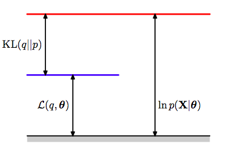

变分自编码机(VAE)
从EM到变分推断
我们假设有一个隐变量z，我们的样本\(x^{( i)}\)是从\(p_{\theta }( x|z)\)中产生，因为有隐变量的存在，通常\(p_{\theta }( x) =\int p_{\theta }( z) p_{\theta }( x|z) dz\)的边缘分布是没法算的。
所以传统来说，我们会构造出一个下界： \[ \begin{aligned} \log p( x) & =\underbrace{E_{z\sim q( z)}(\log p( x ,z)) -H( q)}_{ELOB} +KL( q( z) ||p( z |x)) \end{aligned} \] 
而EM算法，就是通过精心选择这个下界中的q，从而使得下界最大化，也就是计算\(q( z) =p( z|x)\)来近似该模型的似然度。进一步可以参考我之前写的文章《带你理解EM算法》
然而如果我们令\(q( z) =p( z|x) =\frac{p_{\theta }( x|z) p_{\theta }( z)}{p_{\theta }( x)}\)也是不可计算的呢，比如你的z有很多很多维，那么你在算那个期望的时候就会出现一堆积分，这是非常难算的。
此时我们可以使用变分推断的方法，那就是，我们不直接令\(q( z) =p( z|x)\)了，而是选一个相对简单的分布q去近似\(p( z|x)\)。简单的q怎么来？最常用的就是对q作平均场(mean-field)假设，即，我们可以认为： \[ q(\mathbf{z}) =\prod _{i} q_{i}( z_{i}) \] 这个假设的意思是，虽然你的z有很多维，但是他们都是相互独立的，也就是说，你算很多很多积分的时候，每个\(z_{i}\)可以分别积分，所以一个联合积分的问题就简化成了仅需一个积分的问题，于是我们在优化ELOB的时候，只需分别优化\(q_{i}\)就可以了。将平均场假设代进ELOB中，化简可以得到 \[ \begin{aligned} ELOB & =\int _{z_{j}} q_{j}( z_{j})\left[\underset{z_{i\neq j}}{\int \dotsc \int } q( z)\log p( x,z) dz_{i}\right] dz_{j} -\sum _{i}\int _{z_{i}} q_{i}( z_{i})\log q_{i}( z_{i}) dz_{i}\\ & =\int _{z_{j}} q_{j}( z_{j}) E_{i\neq j}[\log p( x,z)] dz_{j} -\int _{z_{j}} q_{j}( z_{j})\log q_{j}( z_{j}) dz_{j} -\underbrace{\sum _{i\neq j}\int _{z_{i}} q_{i}( z_{i})\log q_{i}( z_{i}) dz_{i}}_{Const\ for\ j}\\ & =\int _{z_{j}} q_{j}( z_{j})\log\frac{E_{i\neq j}[\log p( x,z)]}{q_{j}( z_{j})} dz_{j} -\underbrace{\sum ^{M}_{i\neq j}\int _{z_{i}} q_{i}( z_{i})\log q_{i}( z_{i}) dz_{i}}_{Const\ for\ j}\\ & =-KL( E_{i\neq j}[\log p( x,z) ||q_{j}( z_{j})]) +const \end{aligned} \]
因为每个\(z_{j}\)都是相互独立，于是，只需分别最大化每个\(z_{j}\)的ELOB就可以实现ELOB最大化，而其他的项都视作了常数，此时，ELOB就简单地变成了一个负的KL距离，所以，想要最大化这个ELOB，我们只需要令 \[ q_{j}( z_{j}) =E_{i\neq j}[\log p( x,z)] \] 就可以了。这实际上是一个迭代的问题，因为在constant中，包含了其他的项的q，所以，我们只需不断地更新各个元素q的分布直到收敛就可以了。
从变分推断到VAE
但是，如果即使用了平均场假设也没法算，而使用MCMC又太慢怎么办？为了解决这个问题，我们回到最初的那个下界的表达式中
\[ \begin{aligned} \log p( x |\theta ) & =\underbrace{E_{z\sim q( z)}(\log p( x ,z)) -H( q)}_{ELOB} +KL( q( z) ||p( z |x)) \end{aligned} \] 实际上ELOB有几种不同的，但是等价的表达方式：
KL form :
\[\mathcal{L}( \theta ;x) =E_{z\sim q( z)}(\log p_{\theta }( x|z)) -KL( q( z) ||p_{\theta }( z))\] Entropy form:
\[\mathcal{L}( \theta ;x) =E_{z\sim q( z)}(\log p_{\theta }( x ,z)) -H( q)\] Fully Monte Carlo(FMC) form: \[\mathcal{L}( \theta ;x) =E_{z\sim q( z)}[\log p_{\theta }( x,z) -\log q( z)]\]
其中q是一个任意的分布，那么现在，我们令\(q( z) \triangleq q_{\phi }( z|x)\)，用KL形式的下界可以得到： \[ \mathcal{L}( \theta ,\phi ;x) =E_{z\sim q_{\phi }( z|x)}(\log p_{\theta }( x|z)) -KL( q_{\phi }( z|x) ||p_{\theta }( z)) \] 现在引入了一个带参数的\(q_{\phi }\)来表示这个上界，如果要最大化这个上界，我们只要用梯度上升不断更新参数\(\phi\)就可以了。一般情况下，KL距离的那一项是有解析解的，所以梯度很好求。然而对第一项求梯度则没那么简单，一个常用的方法是
\[ \nabla _{\phi } E_{z\sim q_{\phi }( z)}( f( z)) =E_{z\sim q_{\phi }( z)}[ f( z) \nabla _{\phi }\log q_{\phi }( z)] \simeq \frac{1}{L}\sum ^{L}_{l=1} f\left( z^{l}\right) \nabla _{\phi }\log q_{\phi }\left( z^{l}\right) \]

如上图，我们可以用reparameterize trick来解决这个问题，这时z对于x来说就是一个固定的值，只要我们从\(\epsilon\)中抽样后，固定住就可以了，设 \[ z=g_{\phi }( \epsilon ,x) ,\epsilon \sim p( \epsilon ) \] 其中\(\epsilon\)是一个已知的简单分布，比如说标准正态分布，次数z的产生就变成了从某个固定的标准分布中采样，于是下界中的期望那一项可以改写成： \[ E_{z\sim q_{\phi }( z|x)}(\log p_{\theta }( x|z)) =E_{\epsilon \sim p( \epsilon )}(\log p_{\theta }( x|g_{\phi }( \epsilon ,x))) \simeq \frac{1}{L}\sum ^{L}_{l=1}\log p_{\theta }( x|g_{\phi }( \epsilon ,x)) \] 于是对于一个样本\(x^{( i)}\)的下界可以写作： \[ \mathcal{L}\left( \theta ,\phi ;x^{( i)}\right) =\frac{1}{L}\sum ^{L}_{l=1}\log p_{\theta }\left( x^{( i)} |z^{( i,l)}\right) -KL\left( q_{\phi }\left( z^{( i)} |x^{( i)}\right) ||p_{\theta }\left( z^{( i)}\right)\right) \] 其中\(z^{( i,l)} =g_{\phi }\left( \epsilon ^{( i,l)} ,x^{( i)}\right) ,\epsilon ^{( l)} \sim p( \epsilon )\) 在这里，如果我们用一个MLP来表示\(p_{\theta}\)和\(q_{\phi}\)和就可以对用这个目标函数求梯度来最大化了，注意产生z的分布\(q_{\phi }\)其实是由一个标准正态分布的\(\epsilon\)和一个用MLP表示的映射函数\(g_{\phi}\)构成的，所以训练过程实际上是更新\(p_{\theta}\)和\(g_{\phi}\)这两个MLP的参数，我们称\(p_\theta\)为encoder network,\(q_{\phi}\)为decoder network。而z的产生则是从\(p( \epsilon )\)抽一个样本，然后经过一个确定性\(g_{\phi }\)来产生。
更直观一点，如果我们假设先验分布\(p( z)\),\(p( \epsilon )\)服从标准正态分布， \[ z=q_{\phi }( z|x) =g_{\phi }( \epsilon ,x) =\mu _{\phi }( x) +\Sigma _{\phi }^{1/2}( x) \epsilon \] 也就是说，\(q_{\phi }( z|x) \sim N\left( \mu _{\phi }( x) ,\Sigma _{\phi }^{1/2}( x)\right)\)也是正态分布，不过其参数由x决定。于是对于两个正态分布的KL距离，对于有J个维度的z，我们完全可以算出其解析解： \[ \begin{aligned} -KL( q_{\phi }(\mathbf{z} |\mathbf{x}) ||p_{\theta }(\mathbf{z})) & =-KL( N(\mathbf{\mu }_{\phi } ,\mathbf{\sigma }_{\phi }) ||N(\mathbf{0} ,\mathbf{I}))\\ & =\frac{1}{2}\sum ^{J}_{j=1}\left(\left( 1+\log \sigma ^{2}_{j}\right) -\mu ^{2}_{j} -\sigma ^{2}_{j}\right) \end{aligned} \]
接下来我们看看这个网络的架构

encoder network将一只喵星人映射成一个均值和一个方差，然后产生一个z样本，通过decoder network再变成一只喵~
然而VAE对比GAN确实存在一些问题。
可以看到VAE的“拟合”能力没有GAN的强，VAE会趋于平滑而GAN则不会。而且VAE产生的图像会比较模糊，这似乎所有优化对数似然的目标函数都有这问题(《Deep learning》)
参考资料
Auto-encoding variational bayes
Tutorial on variational autoencoders
How does the reparameterization trick for VAEs work and why is it important?